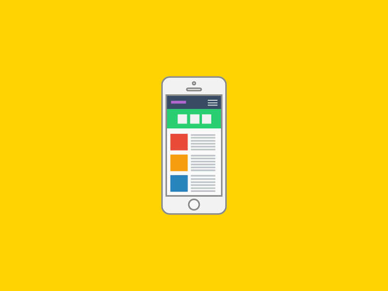

Convierte tus objetivos en una aventura
Registra tus metas diarias, gana puntos y desbloquea logros.
Comenzar AhoraFunciones Principales
Gestión de Metas
Crea, personaliza y organiza tus objetivos con facilidad.
Diario de Progreso
Registra tu viaje con notas, imágenes y reflexiones diarias.
Logros y Recompensas
Desbloquea insignias, puntos y niveles a medida que avanzas.
Encuesta Personalizada
Responde unas preguntas y recibe metas predefinidas que se adaptan a ti.
Modo Invitado
Prueba la plataforma sin necesidad de registro.
¿Qué es Diario Quest?
Diario Quest es una plataforma web diseñada para motivar y guiar a los usuarios en el cumplimiento de sus metas diarias mediante un enfoque narrativo y gamificado. Permite:
- Registrar y personalizar objetivos.
- Obtener retroalimentación inmediata con insignias y niveles.
- Documentar el progreso personal en un diario digital.
Con Diario Quest, cada meta se convierte en un capítulo de tu propia aventura, fomentando la constancia y la autoexploración.
